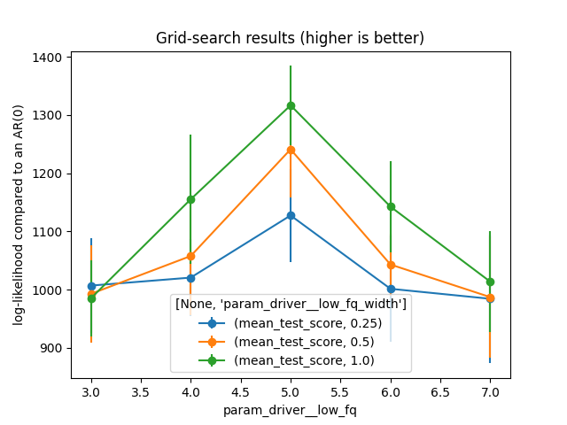

Note
Click here to download the full example code
Grid-search and cross-validation¶
This examples presents the interface with scikit-learn’s GridSearchCV.
It creates an artificial signal with phase-amplitude coupling (PAC), fits a DAR model over a grid-search of parameter, using cross_validation.
Cross-validation is done over epochs, with any strategy provided in scikit-learn (KFold, …).
Note that the score computed by a DARSklearn model is the log-likelihood from which we subtracted the log-likelihood of an autoregressive model at order 0. This is done to have a reference stable over cross-validation splits.
import pandas as pd
import numpy as np
import matplotlib.pyplot as plt
from sklearn.pipeline import Pipeline
from pactools import simulate_pac
from pactools.grid_search import ExtractDriver, AddDriverDelay
from pactools.grid_search import DARSklearn, MultipleArray
from pactools.grid_search import GridSearchCVProgressBar
Let’s first create an artificial signal with PAC.
fs = 200. # Hz
high_fq = 50.0 # Hz
low_fq = 5.0 # Hz
low_fq_width = 1.0 # Hz
n_epochs = 3
n_points = 10000
noise_level = 0.4
low_sig = np.array([
simulate_pac(n_points=n_points, fs=fs, high_fq=high_fq, low_fq=low_fq,
low_fq_width=low_fq_width, noise_level=noise_level,
random_state=i) for i in range(n_epochs)
])
Let’s define the model with a scikit-learn’s pipeline.
In a pipeline, the output of each step is given as input to the next one. Here #we start with ExtractDriver, which extracs the driver with a bandpass #filter, and removes it from #the modeled signal with a highpass filter. Then #we follow with AddDriverDelay, which adds a delay between the driver and the #modeled signal. Finally, we define the DAR model with DARSklearn.
model = Pipeline(steps=[
('driver', ExtractDriver(fs=fs, low_fq=4., max_low_fq=7.,
low_fq_width=low_fq_width, random_state=0)),
('add', AddDriverDelay()),
('dar', DARSklearn(fs=fs, max_ordar=100)),
])
# grid of parameter on which we will loop
param_grid = {
'dar__ordar': np.arange(0, 110, 30),
'dar__ordriv': [0, 1, 2],
'add__delay': [0],
'driver__low_fq': [3., 4., 5., 6., 7.],
'driver__low_fq_width': [0.25, 0.5, 1.],
}
Then we plug the model into GridSearchCV and we fit it.
This performs a grid-search with cross-validation: First, multiple train and test sets are defined by the splitting strategy, as defined by the parameter cv in GridSearchCV. Then, GridSearchCV will loop over each parameter configuration, fitting the model on one train set and evaluating it on the corresponding test set.
# Plug the model and the parameter grid into a GridSearchCV estimator
# (GridSearchCVProgressBar is identical to GridSearchCV, but it adds a nice
# progress bar to monitor progress.)
gscv = GridSearchCVProgressBar(model, param_grid=param_grid, cv=3,
return_train_score=False, verbose=1)
# Fit the grid-search. We use `MultipleArray` to put together low_sig and
# high_sig. If high_sig is None, we use low_sig for both the driver and the
# modeled signal.
X = MultipleArray(low_sig, None)
gscv.fit(X)
Out:
Fitting 3 folds for each of 180 candidates, totalling 540 fits
[Parallel(n_jobs=1)]: Using backend SequentialBackend with 1 concurrent workers.
[Parallel(n_jobs=1)]: Done 540 out of 540 | elapsed: 2.2min finished
GridSearchCVProgressBar(cv=3,
estimator=Pipeline(steps=[('driver',
ExtractDriver(fs=200.0,
low_fq=4.0,
max_low_fq=7.0,
random_state=0)),
('add', AddDriverDelay()),
('dar',
DARSklearn(fs=200.0, max_ordar=100))]),
param_grid={'add__delay': [0],
'dar__ordar': array([ 0, 30, 60, 90]),
'dar__ordriv': [0, 1, 2],
'driver__low_fq': [3.0, 4.0, 5.0, 6.0, 7.0],
'driver__low_fq_width': [0.25, 0.5, 1.0]},
verbose=1)
Print the results of the grid search.
print("\nBest parameters set found over cross-validation:\n")
print(gscv.best_params_)
Out:
Best parameters set found over cross-validation:
{'add__delay': 0, 'dar__ordar': 90, 'dar__ordriv': 2, 'driver__low_fq': 5.0, 'driver__low_fq_width': 1.0}
Plot the results of the grid search.
As we grid-searched over many dimensions, the results are not easy to visualize. That’s why we choose two params to plot and the other are set to their best values.
def plot_results(index='dar__ordar', columns='dar__ordriv'):
"""Select two hyperparameters from which we plot the fluctuations"""
index = 'param_' + index
columns = 'param_' + columns
# prepare the results into a pandas.DataFrame
df = pd.DataFrame(gscv.cv_results_)
# Remove the other by selecting their best values (from gscv.best_params_)
other = [c for c in df.columns if c[:6] == 'param_']
other.remove(index)
other.remove(columns)
for col in other:
df = df[df[col] == gscv.best_params_[col[6:]]]
# Create pivot tables for easy plotting
table_mean = df.pivot_table(index=index, columns=columns,
values=['mean_test_score'])
table_std = df.pivot_table(index=index, columns=columns,
values=['std_test_score'])
# plot the pivot tables
plt.figure()
ax = plt.gca()
for col_mean, col_std in zip(table_mean.columns, table_std.columns):
table_mean[col_mean].plot(ax=ax, yerr=table_std[col_std], marker='o',
label=col_mean)
plt.title('Grid-search results (higher is better)')
plt.ylabel('log-likelihood compared to an AR(0)')
plt.legend(title=table_mean.columns.names)
plt.show()
plot_results(index='dar__ordar', columns='dar__ordriv')
plot_results(index='driver__low_fq', columns='driver__low_fq_width')
- 
Out:
/home/tom/work/github/pactools/examples/plot_grid_search.py:135: UserWarning: Matplotlib is currently using agg, which is a non-GUI backend, so cannot show the figure.
plt.show()
Total running time of the script: ( 2 minutes 14.877 seconds)